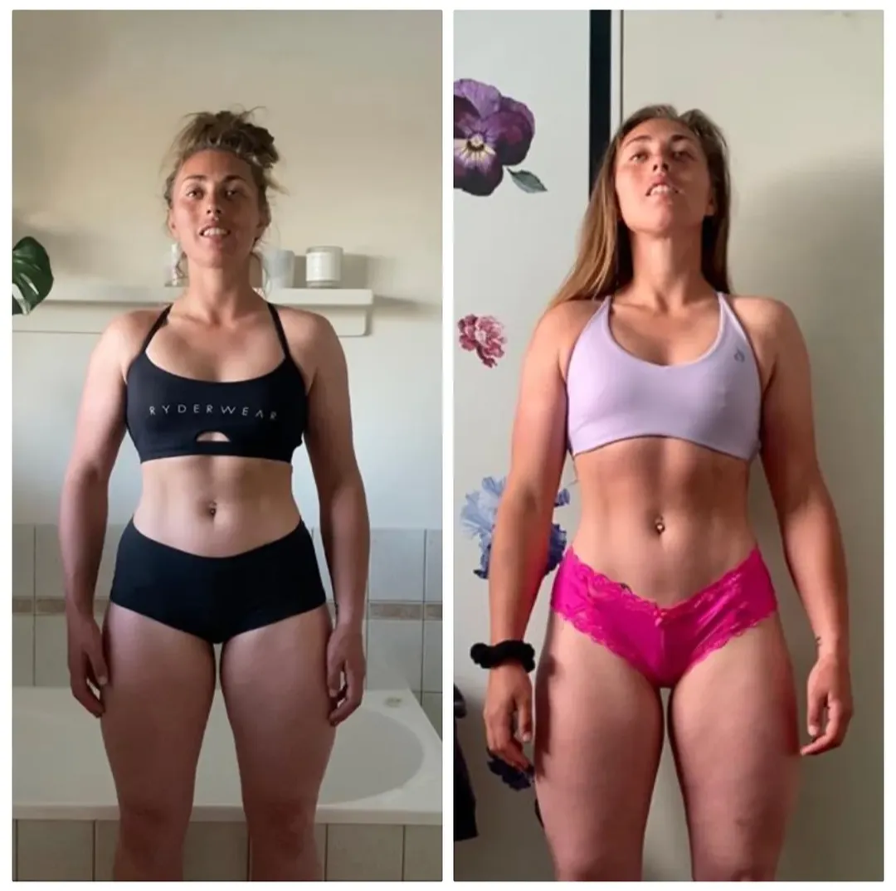

Online coaching
8-week recomposition
Dani's 8-week recomposition
I can't thank Shannon enough for providing me with the support and motivation I needed for this body recomposition. His understanding of the body, motivation, and training is phenomenal.
Dani, online coaching client
Started with
A body-composition goal where the scale was not the full story.
Worked on
Online coaching, consistent training, and nutrition structure she could actually repeat.
Changed in
8 weeks, with visibly more tone from the back and front without chasing scale-weight loss.